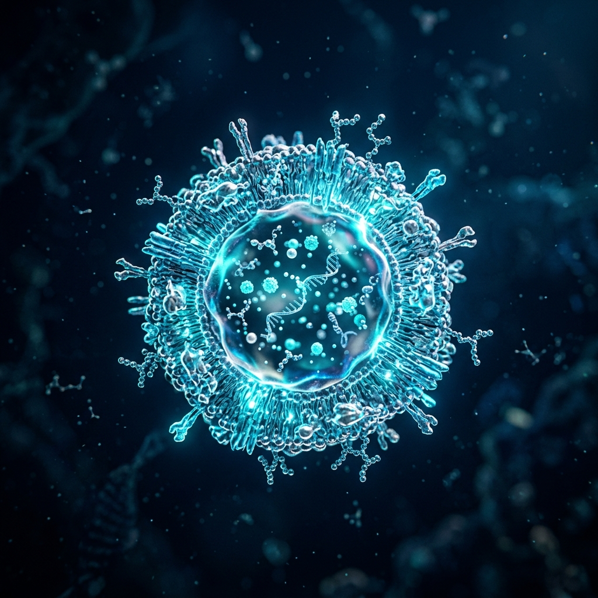
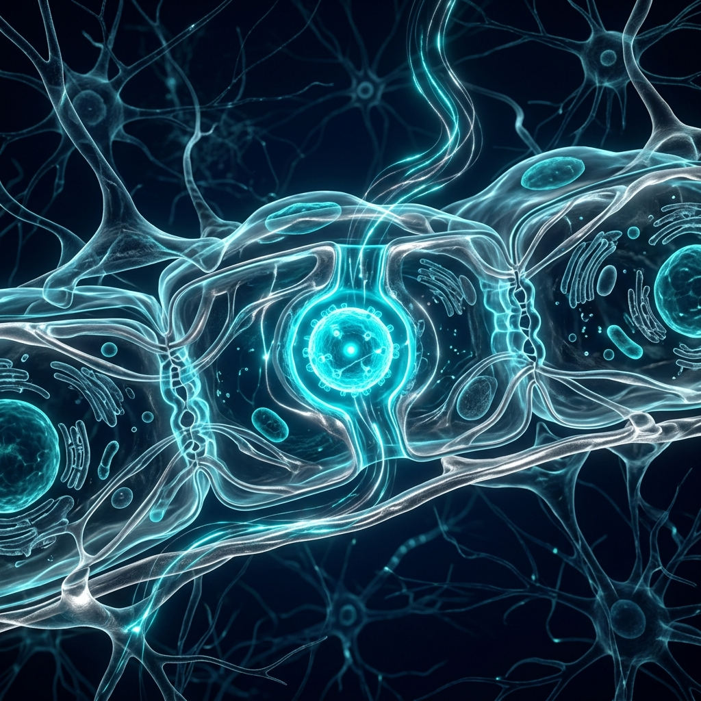

Overcoming the Limits of
Brain Disease Treatment:
The Ultimate Paradigm
Xepbio combines natural exosomes upcycled from marine resources with our proprietary Mfsd2a shuttle technology to actively deliver hope beyond the blood-brain barrier (BBB)—a frontier once deemed impassable.

About Brand
Xepbio. Awakening the Breath of Life
Our journey is completed through 'upcycling'—breathing new life into what was once discarded.
Just like the sacred west wind that brings life to barren lands, we deliver recovery to bodies suffering from disease.
01 / Zephyrus West Wind (X): The Breath of Life
The west wind (Hanyibaram) blowing from Jeju transforms into a gentle breeze the moment it crosses Mount Halla. The ‘X’ in Xepbio represents this life-giving west wind, a breeze of restoration (Christos) that revitalizes dry lands.
02 / Wave Wave: The Birth of Exosomes
As the warm wind blows and creates sea spray, jewel-like particles emerge. We extract the purest and most potent nanoparticles, exosomes (Exosome), from the pristine marine resources of Jeju.
03 / Science Designing the Path of the Wind
Through in-silico simulations on high-performance GPU servers, we calculate the most precise penetration paths. We safely escort them using our Ionic Shielding technology powered by Jeju lava seawater minerals.

01 / The Key
Active BBB-Penetrating Shuttle Structure
Not a lack of efficacy, but a failure of delivery. We break down the barrier where 98% of candidate brain disease therapeutics fail, using our active shuttle approach.
1. Mfsd2a-Binding Shuttle
Utilizing LPC-DHA nanostructures that specifically bind to Mfsd2a, a key nutrient transporter on the blood-brain barrier (BBB), we perfectly escort therapeutics into the brain.
2. Natural Mineral Shielding
Our Jeju lava seawater-based mineral shielding technology prevents premature leakage of natural exosomes. It eliminates systemic toxicity caused by excipients and drastically improves patient compliance.
02 / In-silico Platform
AI-MD Molecular Dynamics Digital Twin
Using high-performance GPU clusters, Xepbio simulates the complex physical and chemical mechanisms of drug penetration across the blood-brain barrier (BBB) at the molecular level in femtoseconds (10-15s). This pre-validates the penetrability of our partners' therapeutic cargo, dramatically reducing development time and cost.

1. High-Performance GROMACS MD Simulation
By modeling the active binding structures between the BBB-penetrating LPC-DHA shuttle and the Mfsd2a transporter, we precisely analyze molecular stability and free energy data over a 100ns+ scale.
2. Ionic Shielding Virtual Modeling
We predict the formation of the natural mineral protective shield from Jeju lava seawater through computational simulation, clarifying the physical elasticity and membrane penetration mechanisms of exosomes under environmental stress.
03 / Platform & Business
Securing Overwhelming Market Dominance
A pure DDS platform licensing model focused strictly on loading and delivering our partners' promising therapeutics using our BBB-penetrating carrier, without developing proprietary drugs.
1/10 Production Cost Innovation
Overcoming the immense cost of human-derived cell cultures and the bottleneck of a low ~50% purification rate. We established a high-yield, large-scale purification system using TFF-based filtration.
Overcoming Cold Chain Limitations
Through an advanced mineral coating structure, we overcome the shipping cold-chain constraints that were the greatest weakness of conventional exosomes, making global expansion a reality.
Expanding Partnerships
Targeting the global $5.4 billion dementia market, we are closely pursuing research collaborations with big pharma as a provider of innovative therapeutic carriers.
UP-CYCLING
04 / ESG Impact
Turning Waste into the Essence of Life
Fish hold water generated during the processing of bluefin tuna and yellowtail was discarded at a rate of tens of thousands of tons daily, causing immense water purification costs.
We identified, for the first time globally, that this discarded fish hold water contains a massive amount of natural exosomes. We realize perfect ESG value by converting a critical environmental pollutant into a life-giving resource that treats the human brain.
05 / Newsroom & R&D
World-Class Academic Validation
Published Nature convergence research based on bio-digital twins.
Secured technology transfer, research, and quality control systems by Kyung Hee University faculty.
Featured as a cover article in a world-renowned journal for a delivery platform utilizing semiconductor process integration.
06 / Orbit
Chat with Xepbio Orbit
An IR-specialized agent that answers questions regarding our core competitiveness, target markets, and technical mechanisms in detail.
Feel free to ask about overcoming high-cost exosome bottlenecks, the mechanism of the Mfsd2a shuttle, or our ESG environmental contributions.
* Powered by Gemini 1.5 Flash with secure routing system active.